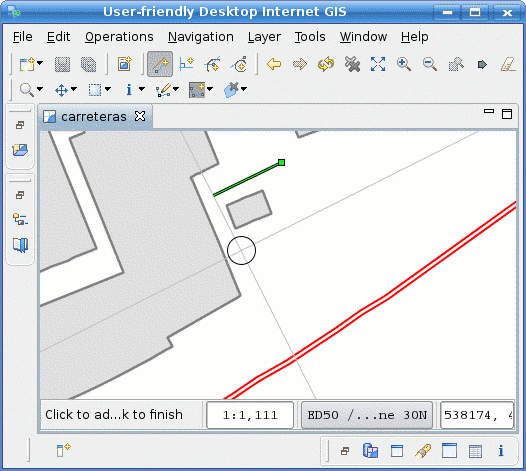

Parallel Mode (under development)
 Applies a constraint to draw line segments parallel to another one
Applies a constraint to draw line segments parallel to another one
The Parallel Mode allows you to select a reference segment and to draw only line segments parallel to that reference one.
To select a reference segment, use the Snap Area as shown in Figure 1. Whether you can select the reference segment from a Feature in the current Layer, in all Layers, or in the Grid, depends on the Snap Behaviour set as preference.

Figure 1 Selecting a reference segment from a Feature in another Layer
When you select a reference segment, it will blink a couple times and the orthogonal axes centered at the mouse location will rotate such that one of the axes is parallel to the reference segment and the other is orthogonal to it, as you can see in Figure 2.

Figure 2 Parallel constraint applied and axes rotated
From now on, given that you have a reference segment selected, you can add as many segments as desired, being sure that the segments added will be forced to be over the parallel line to the reference segment that passes through the last vertex and goes to the axis orthogonal to the reference segment.
At any point you can select a different reference segment, always with the help of the Snap Area, as shown in Figure 3, and get the new constraint to keep adding vertexes, now forming segments parallel to the new reference segment.

Figure 3 Selecting another reference segment
Keep selecting reference segments with and creating parallels as desired. Figure 4 shows an example following the contour of a building.
Remember you can double click to add a final vertex and finish the current geometry as usual in uDig, or select other Edit Modes at your convenience.

Figure 4 Various consecutive segments added parallel to different reference segments
| Tip When using the Snap Area behaviour, remember you could adjust the size of the snap area with the mouse wheel while pressing the ALT key. |
{kind=link}